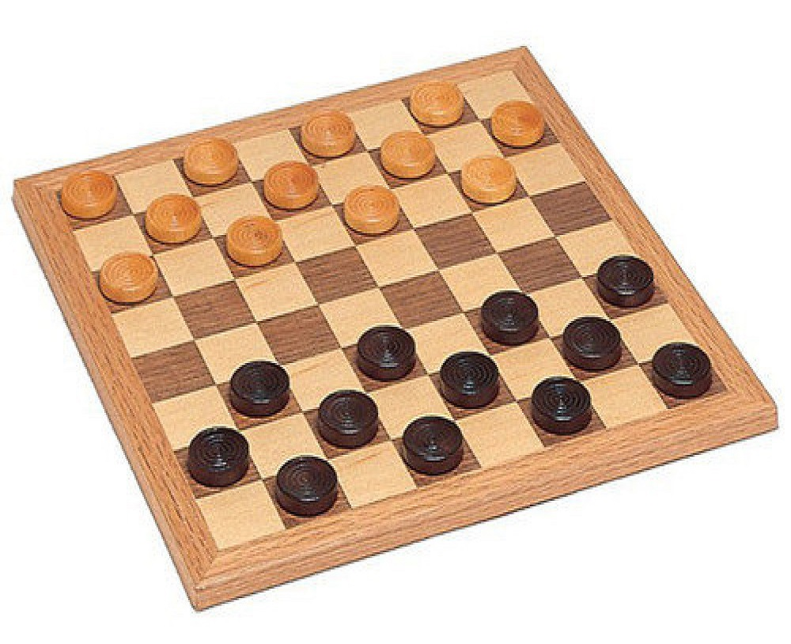
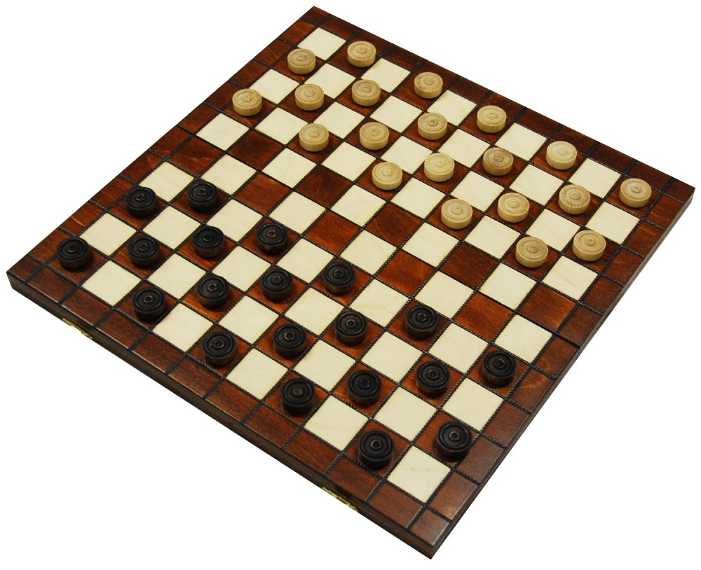
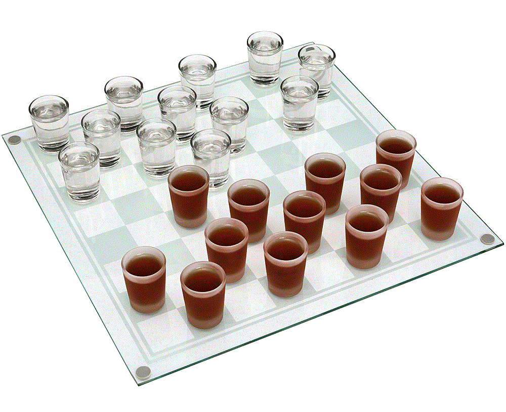

Шашки-64

Русские шашки — традиционный и наиболее популярный вид шашек в России[2], странах бывшего СССР и в
Израиле. Каждому игроку принадлежит 12 простых шашек, занимающие в начальной позиции чёрные поля первых
трёх горизонталей, ближайших к игроку. Первый ход делают белые.
Шашки-100

Игра наиболее популярна в Нидерландах, Бельгии, Польше, Франции, Суринаме, имеет популярность в Европе,
России и других странах бывшего СССР, Израиле, Монголии, Китае, в странах Западной Африки. Используется
доска 10×10 клеток. У каждого игрока в начальной позиции по 20 шашек, которые занимают первые четыре
ряда с каждой стороны. Правила игры сходны с правилами русских шашек; отличия заключаются в шашечной
нотации, а также в некоторых правилах боя и признания окончаний ничейными:
Шашки-алко

Алкогольные шашки — наиболее популярный вид шашек в России[2]. Каждому игроку принадлежит 12 простых
рюмок, занимающие в начальной позиции чёрные поля первых трёх горизонталей, ближайших к игроку. Первый
ход делают белые.